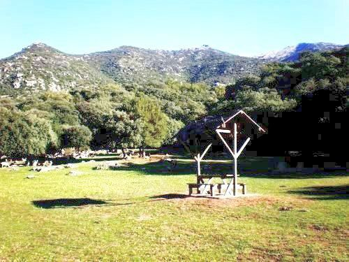

Menú para todos
Que tu mascota también disfrute comiendo



Disponemos de un servicio de terraza en el exterior, donde su animal de compañia
podrá disfrutar de una comida al aire libre e interaccionar con animales del mismo
tipo disfrutando de un gran parque y naturaleza.
Si el tiempo no acompaña o se prefiere comer en interior, estarán igual de cómodos en
nuestras instalaciones interiores con césped artificial para que disfruten de la misma
sensación.


Si su animal de compañía necesita de algún cuidado alimenticio especial o un entorno en el que no haya más animales, contacte con nosotros.